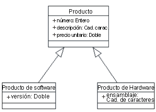

| Directriz: Ingeniería inversa de bases de datos relacionales |
 |
|
| Elementos relacionados |
|---|
IntroducciónEn esta directriz se describen los pasos implicados en la ingeniería inversa de una base de datos y en la correlación de las tablas de modelo de datos resultantes con clases de diseño en el modelo de diseño. El diseñador de base de datos puede utilizar este proceso para generar el desarrollo de modificaciones para la base de datos como parte de un ciclo de desarrollo de evolución. El diseñador de base de datos debe gestionar el proceso de ingeniería inversa a lo largo del ciclo de vida de desarrollo del proyecto. En muchos casos, el proceso de ingeniería inversa se lleva a cabo en una fase temprana del ciclo de vida del proyecto y, a continuación, los cambios en el diseño de datos se gestionan de forma incremental, sin necesidad de realizar ingeniería inversa posterior de la base de datos. Los pasos más importantes del proceso para ingeniería inversa de una base datos y la transformación de los elementos del modelo de datos resultantes en elementos del modelo de diseño son los siguientes:
Ingeniería inversa de base de datos RDBMS o script DDL para generar un modelo de datosNormalmente, el proceso de ingeniería inversa de script DDL (lenguaje de definición de datos) o de bases de datos produce un conjunto de elementos de modelo (por ejemplo, tablas, vistas o procedimientos almacenados). Dependiendo de la complejidad de la base de datos, es posible que el diseñador de bases de datos deba particionar los elementos de modelo de ingeniería inversa en paquetes de área temática que contengan conjuntos de tablas relacionados de forma lógica. Transformación del modelo de datos en modelo de diseñoSe puede seguir el procedimiento siguiente para producir clases de diseño a partir de elementos de modelo en el modelo de datos. La creación de réplicas de la estructura de la base de datos en un modelo de clase es relativamente sencilla. En el proceso que se indica más abajo se describe el algoritmo para transformar elementos del modelo de datos en elementos del modelo de diseño. En la tabla siguiente se muestra un resumen de la correlación general entre elementos del modelo de diseño y elementos del modelo de datos.
Algunos elementos de modelo del modelo de datos no tienen correlación directa en el modelo de diseño. Estos elementos incluyen los espacios de tablas y la base de datos en sí misma, que modelan las características de almacenamiento físico de la base de datos y se representan como componentes. Otro elemento son las vistas de la base de datos, que son tablas "virtuales" sin significado en el modelo de diseño. Por último, los índices de las claves principales de las tablas y las funciones de desencadenamiento de la base de datos, que se utilizan para optimizar el funcionamiento de las bases de datos, y sólo tienen significado en el contexto de la base de datos y el modelo de datos. Transformar una tabla en una clasePara cada tabla que desee transformar, cree una clase que la represente. Para cada columna, cree un atributo en la clase con el tipo de datos adecuado. Intente que el tipo de datos del atributo y el tipo datos de la columna asociada coincidan lo máximo posible. Ejemplo Considere la tabla de base de datos Cliente, con la estructura siguiente de la figura que se muestra más abajo:
Definición de tabla para la tabla Cliente Empezando a partir de este punto, se crea una clase, Cliente, con la estructura que se muestra en la figura siguiente:
Clase Cliente inicial En esta clase Cliente inicial, en la tabla Cliente existe un atributo para cada columna. Cada atributo tiene visibilidad public, puesto que se puede consultar cualquiera de las columnas de la tabla de origen. Observe que el icono "+" listado a la izquierda del atributo indica que el atributo es 'public'; por omisión, todos los atributos derivados de las tablas RDBMS deben ser públicos puesto que, por lo general, RDBMS permite consultar cualquier columna sin restricciones. Identificación de clases implícitas o incorporadasCon frecuencia, la clase que es resultado de la correlación de tabla-clase directa contiene atributos que se pueden separar en una clase separada, especialmente, en aquellos casos en los que los atributos aparecen en varias clases transformadas. Estos "atributos repetidos" pueden ser resultado de la desnormalización de tablas por motivos de rendimiento, o bien, de un modelo de datos simplificado en exceso. En estos casos, divida la clase correspondiente en dos o más clases que representen una vista normalizadas de las tablas. Ejemplo Después de definir la clase Cliente, más arriba, se puede definir una clase Dirección que contenga toda la información relacionada con la dirección (dando por supuesto que hay otros elementos con direcciones en el sistema), lo que dejaría las clases siguientes:
clase Cliente revisada, con la clase Dirección extraída La asociación que se dibuja entre ambas es una agregación, puesto que la dirección del cliente se puede considerar como parte del cliente. Manejo de relaciones de claves externasPara cada relación de clave externa de la tabla, cree una asociación entre las clases asociadas, eliminando el atributo de la clase que se ha correlacionado con la columna de claves externas. Si la columna de claves externas se ha representado, inicialmente, como un atributo, elimínelo de la clase. Ejemplo Suponga la estructura de la tabla Pedido listada más abajo:
Estructura de la tabla Pedido En la tabla Pedido listada más abajo, la columna ID_Cliente es una referencia de clave externa; esta columna contiene el valor de clave principal del cliente asociado al pedido, tal como se representa en el modelo de diseño que se muestra más abajo:
Representación de las relaciones de claves externas en el modelo de diseño La clave externa se representa como una asociación entre las clases Pedido y Elemento. Manejo de relaciones de varios a variosLos modelos de datos RDBMS representan relaciones de varios a varios con lo que ha dado en llamar una tabla de unión, o bien, una tabla de asociación. Estas tablas permiten representar relaciones de varios a varios por medio de una tabla intermedia que contiene las claves principales de dos tablas diferentes que se pueden unir entre sí. El motivo por el que se necesitan tablas de unión es que una referencia de clave externa sólo puede contener una referencia a un solo valor de clave externa; una sola fila se puede relacionar con otras filas de otra tabla, pero se necesita una tabla de unión para asociarlas. Ejemplo Considere el caso de Productos, que puede proporcionar uno de varios Proveedores, y cualquier Proveedor puede ofrecer cualquier número de Productos. Las tablas Productos y Proveedores tienen la estructura que se ha definido más abajo:
Definiciones de las tablas Productos y Proveedores Con el objeto de enlazar ambas tablas entre sí para buscar los productos que ofrece un proveedor determinado, se necesita una tabla Productos-Proveedor, que se definen en la tabla siguiente:
Definición de la tabla Producto-Proveedor Esta tabla de unión contiene las claves principales de los productos y los proveedores, enlazándolos entre sí. Una fila de la tabla indica que un proveedor determinado ofrece un producto concreto. Todas las filas cuyo ID_Proveedor coincide con un ID de proveedor específico proporcionan un listado de todos los productos que ofrece dicho proveedor. En el modelo de diseño, esta tabla intermedia es redundante, puesto que un modelo de objeto puede representar asociaciones de varios a varios de forma directa. En la figura siguiente se muestran las clases Proveedor y Producto y sus relaciones, junto con la clase Dirección, que se extrae del Proveedor, tal como se ha explicado más arriba.
Representación de las clases Producto y Proveedor Introducción de la generalizaciónA menudo, se encuentran tablas cuya estructura es similar. En el modelo de datos no hay ningún concepto de generalización, por lo que no existe ningún procedimiento para representar que dos o más tablas tienen una estructura en común. A veces, la estructura común es resultado de la desnormalización para el rendimiento, como sucedía en el caso anterior con la tabla Dirección "implícita" que se ha extraído a una clase separada. En otros casos, las tablas comparten características más esenciales que se pueden extraer a una clase padre generalizada con dos o más subclases. Para buscar oportunidades de generalización, observe las columnas repetidas en varias tablas, donde las tablas presentan más similitudes que diferencias. Ejemplo Considere las tablas siguientes, SoftwareProduct y HardwareProduct, tal como se muestran más abajo:
Tablas SoftwareProduct y HardwareProduct Observe que las columnas resaltadas en azul son idénticas; ambas tablas comparten gran parte de la definición, y presentan ligeras diferencias. Se puede representar extrayendo una clase Producto, con SoftwareProduct y HardwareProduct como subclases del Producto, tal como se muestra en la figura siguiente:  Clases SoftwareProduct y HardwareProduct, mostrando la generalización de la clase Producto. Al unir todas las definiciones de clases entre sí, la figura siguiente muestra un diagrama de clase consolidado para el sistema de Entrada de pedido (sólo las clases principales).
Diagrama de clase consolidado para el sistema de entrada de pedido Creación de réplicas del comportamiento de RDBMS en el modelo de diseñoLa creación de réplicas es más difícil puesto que, normalmente, las bases de datos relacionales no están orientadas a objetos y parecen no tener nada análogo con las operaciones realizadas en una clase del modelo de objeto. Los pasos siguientes le pueden ayudar a volver a construir el comportamiento de las clases identificadas más arriba:
Organizar elementos en el modelo de diseñoLas clases de diseño que se crean a partir de las transformaciones de tabla en clase se deben organizar en paquetes de diseño o subsistemas de diseño adecuados en el modelo de diseño, según proceda, en base a la estructura arquitectónica global de la aplicación. Consulte los apartados Concepto: Capas y Concepto: Arquitectura de software, donde se proporciona una visión general de la arquitectura de la aplicación. |
||||||||||||||||||||||||||||||||||||||||||||||||||||||||||||||||||||||||||||||||||||||||||||||||||||||
© Copyright IBM Corp. 1987, 2006. Reservados todos los derechos. |